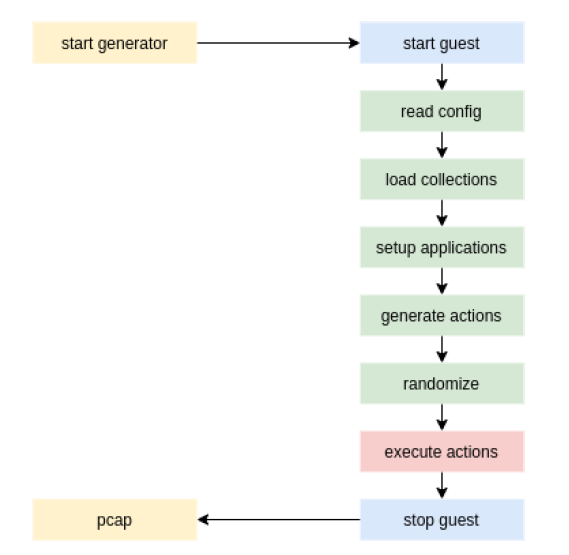

Generator and manual testing¶
The generator is an addition to make the use of ForTrace more user-friendly. It allows a user to generate multiple instances of relevant forensic evidence and additional data to synthesize a complete and more realistic dataset without needing to write a python script every time the framework is used. Additionally, after finishing the scenario entered, the generator returns a .pcap file for the user to evaluate the generated network traffic as well as an optional memory dump.
To use the generator, the user needs to configure a .yaml file (a template can be seen at the end of this section). The file is structured in 5 section:
- collections: This section contains a list of possible parameters such as email recipients, messages or lists of websites. The choice of what parameters are used is randomized and dependent on what seed is used - using the same seed twice should result in similar (or the same) results.
- applications: This section determines which applications are used to generate traffic and execute the actions defined in the following sections.
3. hay and 4. needles: These sections define the actions that are supposed to be simulated to generate artifacts. The separation between hay and needles is simply a formatting choice - it should have no bearing on what actions are allowed to be executed.
- dumps can be used to create certain data dumps. Currently, only memory dumps are implemented as network traffic is recorded regardless.

Generator workflow.
The generator can be started with the following command:
$ python -m fortrace.generator config.yml
Additionally, there is a python script \examples\generate_haystack.py that can be called with the yaml-file as a parameter, performing the same task as the command above.
What follows is depicted in the workflow diagram above. First, the virtual machine(s) is started and a connection between host and guest is established. Then, the config.yml is read and the collections are loaded into the generator. Next, the needed applications are set up and hay and needles are used to generate the actions detailed in the config file. Before executing these actions, the parameters are chosen randomly. Once all actions have completed, the guest components are stopped and a .*pcap* file is created on the host machine. If the dumps section of the yaml file is filled in, additional dumps will be created on the host machine.
If you are currently not using a NFS or your NFS server is not located on your host machine, leave the fields host_nfs_path and guest_nfs_path empty - this will allow you to use normal windows or linux paths.
YAML-Template¶
name: haystack-example
description: A example action suite to generate a haystack (traffic)
author: MPSE Group
seed: 1234
collections:
c-http-0:
type: http
urls: ./generator/friendly_urls.txt
c-mail-0:
type: mail
recipients: ./generator/friendly_recipients.txt
subjects: ./generator/friendly_subjects.txt
messages: ./generator/friendly_messages.txt
c-print-0:
type: printer
files: ./generator/printer_default_documents.txt
c-smb-0:
type: smb
files: ./generator/general_default_attachments.txt
settings:
host_nfs_path: /data/fortrace_data
guest_nfs_path: Z:\\
applications:
mail-0:
type: mail
imap_hostname: imap.web.de
smtp_hostname: smtp.web.de
email: fortrace@web.de
password: Vo@iLmx48Qv8m%y
username: fortrace
full_name: Heinz fortrace
socket_type: 3
socket_type_smtp: 2
auth_method_smtp: 3
mail-1:
type: mail
imap_hostname: 192.168.103.123
smtp_hostname: 192.168.103.123
email: sk@fortrace.local
password: fortrace
username: sk
full_name: Heinz fortrace
socket_type: 0
socket_type_smtp: 0
auth_method_smtp: 3
printer-0:
type: printer
hostname: http://192.168.103.123:631/ipp/print/name
smb-0:
type: smb
username: service
password: fortrace
destination: \\192.168.103.123\sambashare
malware-0:
type: malware
service-vm: 192.168.122.219
dnsServer: 192.168.122.219
webServer: 192.168.122.219
name: MalwareBot.exe
webPort: 7777
service-port: 8080
beacon: 1
path: C:\users\fortrace\Downloads
hay:
h-http-0:
application: http
url: https://dasec.h-da.de/
amount: 1
h-http-1:
application: http
amount: 3
collection: c-http-0
h-mail-0:
application: mail-1
recipient: sk@fortrace.local
subject: a random mail
message: I’m sending you this mail because of X.
attachments:
- /data/fortrace_data/blue.jpg
- /data/fortrace_data/document.pdf
amount: 1
h-mail-1:
application: mail-1
amount: 2
recipient: sk@fortrace.local
collection: c-mail-0
needles:
n-printer-0:
application: printer-0
file: C:\Users\fortrace\Documents\top_secret.txt
amount: 2
n-mail-0:
application: mail-1
recipient: sk@fortrace.local
subject: a suspicious mail
content: I've attached said document.
attachments:
- /data/fortrace_data/hda_master.pdf
amount: 1
n-smb-0:
application: smb-0
amount: 1
files:
- C:\Users\fortrace\Documents\top_secret.txt
- C:\Users\fortrace\Documents\hda_master.pdf
h- malware -1:
application: malware-0
collection: c-malware-0
dumps:
d-dump-0:
dump-type: mem
dump-path: /home/fortrace/gendump.file
Manual Testing¶
It is also possible to manually test single or multiple modules using self-written python scripts. While running large scale scenarios like this may be cumbersome, it is an easy method to test single scenarios or new modules. This section will describe the possible structure of such a script using one of the example scripts found in /examples/obsolete_legacy.
First, define the details of the virtual machine that is going to simulate the guest system. The current test scripts use a function create_vm for this.
Here, the name of the guest and its operating system are determined. Then, after cloning the template and starting the guest a connection is established.
In the main portion of the script, the function is called before executing the application that the user wants to run.
In this example, an instance of the Firefox application is started and directed to open a browser, browse to 3 different websites and then close the browser. In the end, the guest system is shut down and deleted. If you want to keep a system intact, simply remove the final line (guest.remove).
It would also be advisable to add some exception handling to your script. An example is shown below.
The script is then called like any other python script.